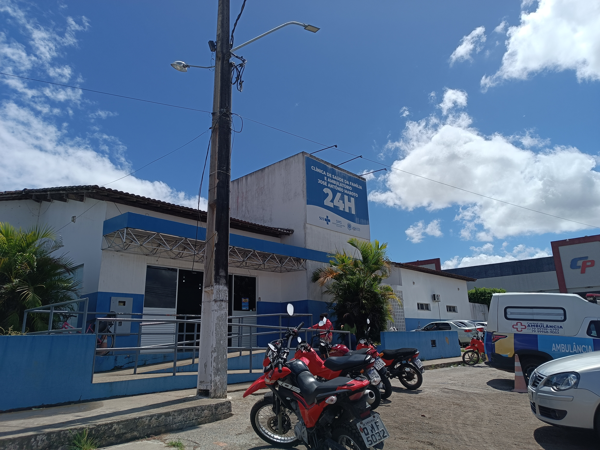

Destaques da Cultura
Esporte & Tradição
Vaquejada de Lagarto
Muito mais que um esporte, a vaquejada é a alma do sertanejo. O Parque das Palmeiras é palco de grandes disputas e celebra a força do homem do campo, reunindo multidões e mantendo viva a tradição do gado e do cavalo.
Saiba mais
Sabor da Terra
Macaxeira & Raízes
Lagarto é a capital da mandioca. Da farinha torrada ao beiju, a raiz sustenta a economia e a mesa das famílias. Conheça o processo de produção nas casas de farinha e a importância desse alimento para nossa identidade.
Descobrir sabores
Utilidade Pública
Ajuda ao Visitante
Para aproveitar o melhor de Lagarto com segurança e tranquilidade. Encontre aqui informações sobre postos policiais, hospitais, transporte e dicas para navegar pela feira e arredores sem preocupações.
Ver mapa e dicas
